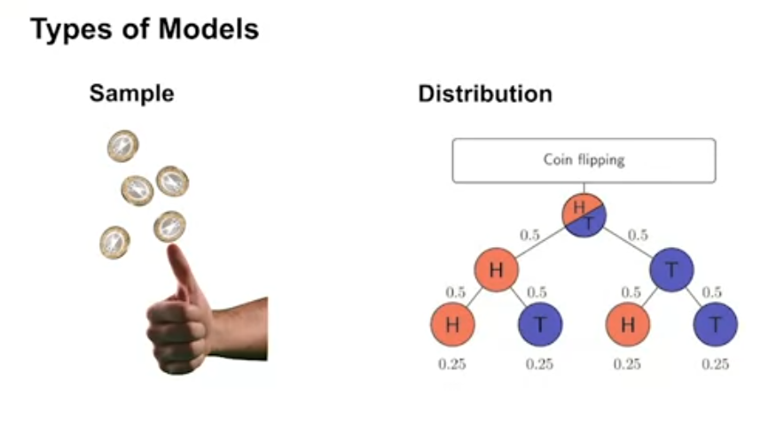
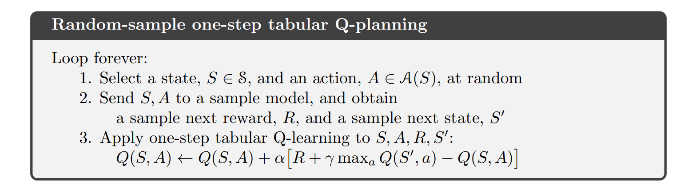
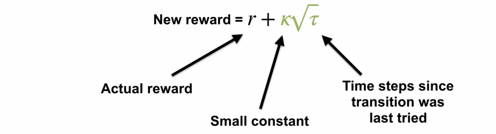

timeline
title Bandit Algorithms Timeline
1952 : Thompson Sampling
1955 : Upper Confidence Bound (UCB)
1963 : Epsilon-Greedy
2002 : Bayesian UCB
2011 : Bayesian Bandits
2012 : Contextual Bandits


Lesson 1: What is a model?
Lesson Learning Goals
What is a model and how can it be used?
A model is a simplified representation of the environment dynamics
Models can be used to simulate the environment
In this course a Model is a function that predicts the next state and reward given the current state and action
a transition model \(s_{t_+1} = f(s_t, a_t)\) predicts the next state given the current state and action
a reward model \(r_{t_+1} = f(s_t, a_t)\) predicts the reward given the current state and action
three other model types are mentioned in the ICML Tutorial on Model-Based Reinforcement Learning
- Inverse models predict the action given the current state and next state \(a_{t+1} = f_s^{-1}(s_t, s_{t+1})\)
- Distances models predict the distance between the current state and the goal state \(d_{ij} =d(s, s')\)
- Future return models predict the future return given the current state and action \(G_t=Q(s_t, a_t)\) or \(G_t=V(s_t)\)
Why do we want to use models?
- model allow us to simulate the environment without interacting with it.
- this can increase sample efficiency - e.g. by replaying past experiences to propergate learning from goal to all predecessor states we have visited
- this can reduce risks - e.g. by simulating dangerous situations instead of actually experiencing them.
- this can reduce costs - e.g. by simulating costly actions in a simulated environment instead of paying the cost in the real environment.
- this could be much faster than real-time interaction with the environment. Often in robotics simulation is orders of magnitude faster than real-time interaction.
Types of models

- Distribution models predict the probability distribution of the next state and reward
- Sample models predict a single next state and reward
Also there are:Environment simulator
- Chess Programs typicaly can simulate all possible movers and evaluate the board position (tacticaly and strategically). The difference between the current board position and the board position after a move is the reward.
- [@Silver2016MasteringTG] mentions an Environment simulator for the game of go
- [@Agostinelli2019SolvingTR] used a simulator of the rubik’s cube to train a reinforcement learning agent to solve the cube.
- [@Bellemare2012TheAL] used a simulator of the game of atari to train a reinforcement learning agent to play atari games.
- [@Todorov2012MuJoCoAP] used a simulator of the physics of the real world to train a reinforcement learning agent to control a robot.
- [@Shen2018MWalkLT] used a simulator to train agents to navigate a graph using MCTS.
- [@Ellis2019WriteEA] used a REPL environment to train a reinforcement learning agent to write code.
When to use a distribution model or sample model
- Distribution models are useful when we need to know the probability of different outcomes
- Sample models are useful when we need to simulate the environment
Advantages and disadvantages of sample models and distribution models
Sample models can be represented more compactly than distribution models
Distribution models can be more accurate than sample models
exact expectations can be computed from distribution models
assessing risks and uncertainties is easier with distribution models
Why sample models can be represented more compactly than distribution models
Sample models can be represented more compactly than distribution models because they only need to store a single next state and reward
Distribution models need to store the joint probability of each possible next state and reward pair
Sample models can be more efficient when we only need to simulate the environment
Lesson 2: Planning
Lesson Learning Goals
How planning is used to improve policies
- Planning is the process of using a model to improve a policy or value function
- Planning can be used to improve a policy or value function without interacting with the environment
- Planning can be used to improve a policy or value function more efficiently than direct RL updates
Random-sample one-step tabular Q-planning {#sec-l2g2}


- Tabular Q-planning is a planning algorithm that uses a sample model to improve a policy or value function
- Tabular Q-planning uses a sample model to simulate the environment
- Tabular Q-planning uses the simulated experience to improve a policy or value function
advantages of planning
- Planning can be more efficient than direct RL updates
- Planning can be used to improve a policy or value function without interacting with the environment
- Planning can be used to improve a policy or value function more efficiently than direct RL updates
Lesson 3: Dyna as a formalism for planning
Lesson Learning Goals
Direct RL updates use experience from the environment to improve a policy or value function
- Direct RL updates use experience from the environment to improve a policy or value function
- Direct RL updates can be used to improve a policy or value function by interacting with the environment
Planning updates use experience from a model to improve a policy or value function
- Planning updates use experience from a model to improve a policy or value function
- Planning updates can be used to improve a policy or value function without interacting with the environment
Both direct RL and planning updates can be combined through the Dyna architecture
- Dyna architecture combines direct RL updates and planning updates to improve a policy or value function
- Dyna architecture uses a model to simulate the environment
- Dyna architecture uses the simulated experience to improve a policy or value function
The Tabular Dyna-Q algorithm
- Tabular Dyna-Q is a planning algorithm that uses a sample model to improve a policy or value function
- Tabular Dyna-Q uses a sample model to simulate the environment
- Tabular Dyna-Q uses the simulated experience to improve a policy or value function

Exercise 8.2 Why did the Dyna agent with exploration bonus, Dyna-Q+, perform better in the first phase as well as in the second phase of the blocking and shortcut experiments?
Dyna-Q+ is like a generalized UCB while Dyna-Q+ is like a generalized epsilon greedy alg. Dyna-Q+ is doing more efficent exploration. It will revisits will be more spread out more over time but it scheme also tends to increases in non independent way - probabilities for unvisited regions keep growing so if it starts exploring it may like doing an extended sequence till it gets to a dead end.
Dyna Q exploration is independent for each state,action combo so retrying sequences get asymptotically less likely with time.
Exercise 8.3 Careful inspection of Figure 8.5 reveals that the difference between Dyna-Q+ and Dyna-Q narrowed slightly over the first part of the experiment. What is the reason for this?
Dyna-Q+ is more efficient at exploring so it learned a better policy, but since the environment was static Dyna-Q got to catch up, but it never reached the same policy.
Exercise 8.5 How might the tabular Dyna-Q algorithm shown on page 164 be modified to handle stochastic environments? How might this modification perform poorly on changing environments such as considered in this section? How could the algorithm be modified to handle stochastic environments and changing environments?
to hadle a stochastic environment one would need to to model probabilities of stochastic dynamics. One way to do this is to use Bayesian updating with a dericlet prior and a multinomial posterior.
This modification would likely fare much worse since learning low probability transitions would require many visits to discover.
In the case of changing environment it would also take much longer for new state to be reflected in the model (if a state was visited 10 with just one transition and then the transition changed to another state then it would take many more than 10 vistis to quash the old probability and get the new one correct to 10%
This means that we adding a forgetting rule might be better then the plain derichlet-multinomial model.
To handle both stochastic and changing updates we may want to
1. track the recency of the last visit and reward this option like in dyna-q plus.
2. decay old probabilities - would require storing the time for each visit - i.e. path dependent model.
3. A better idea is to use a hirachial model with parial pooling representing short term and long term transitions - this could fix the problem of decay by simply giving greater weight to the smaller more recent model.
The short term would track the last k visits in each state and the long term all the visits. We could then do partial pooling between these two estimators with much greater emphasis on the recent one!
Direct-RL and planning updates in Tabular Dyna-Q
- Tabular Dyna-Q uses direct RL updates to improve a policy or value function
- Tabular Dyna-Q uses planning updates to improve a policy or value function
Model learning and search control components of Tabular Dyna-Q
- Tabular Dyna-Q uses a sample model to simulate the environment
- Tabular Dyna-Q uses the simulated experience to improve a policy or value function
Learning from both direct and simulated experience impacts performance
- Learning from both direct and simulated experience can improve performance
- Learning from both direct and simulated experience can be more efficient than direct RL updates
Simulated experience can be useful when the model is accurate
- Simulated experience can be useful when the model is accurate
- Simulated experience can be used to improve a policy or value function without interacting with the environment
Lesson 4: Dealing with inaccurate models
Lesson Learning Goals
Ways in which models can be inaccurate
- Models can be inaccurate for many reasons
- because they have not sampled all actions in all states
- because the environment is has changed since the model was learned
- if the environment is stochastic
Effects of planning with an inaccurate model
- Planning with an inaccurate model can cause the value function to become worse
- Planning with an inaccurate model can lead to sub-optimal policies
Dyna can plan successfully with a partially inaccurate model
- Dyna can plan successfully with a partially inaccurate model
- Dyna can use direct RL updates to improve a policy or value function as well as the model
- Dyna can use planning updates to improve a policy or value function
Model inaccuracies produce another exploration-exploitation trade-off
Model inaccuracies produce another exploration-exploitation trade-off
exploit an inaccurate model to improve the policy
revisit states/actions with low value to update the model
Can we use an inverse sort of planning to identify states for which the model is inaccurate?
Model inaccuracies can lead to suboptimal policies
Model inaccuracies can lead to poor performance
Dyna-Q+ proposes a way to address this trade-off

- Dyna-Q+ proposes a way to address this trade-off
- Dyna-Q+ uses a bonus reward to encourage exploration
- Dyna-Q+ can improve performance when the model is inaccurate
Drew Bagnell on self-driving cars robotics and model-based reinforcement learning
Drew Bagnell is a professor at Carnegie Mellon University and the CTO at Aurora innovation.
He has worked on self-driving cars and robotics. He has also worked on model-based reinforcement learning. He point out a dirty little secret that model-based reinforcement learning is a key technology for robotics.
He points out that the real world is expensive and dangerous. Using model based reinforcement learning can reduce the number of interactions with the real world and along learning about risky actions in the simulated world to improve performance in the real world. Also as we pointer out before this can usually be done much faster than real-time interaction with the environment.
Sample complexity: how many real-world samples are required to achieve high performance? It takes exponentially fewer interactions with a model than without. Not really sure what exponentially fewer means here - but it’s a lot fewer.
Quadratic value function approximation goes back to optimal control in the 1960s. It’s continuous in states and actions. This is a method that should be part of the next course but isn’t covered there either
For linear transition dynamics with quadratic costs/rewards, it’s exact. For local convex / concave points, it is a good approximation of the true action-value function.
Here is the math from his slide:
Quadratic value function approximation
\[ Q_t(x,a) = \begin{bmatrix} x \\ a \\ \end{bmatrix}^T \begin{bmatrix} Q_{xx} && Q_{xa} \\ Q_{xa} && Q_{uu} \\ \end{bmatrix} \begin{bmatrix} x \\ a \\ \end{bmatrix}^T + \begin{bmatrix} q_x \\ q_a \\ \end{bmatrix}^T \begin{bmatrix} x \\ a \\ \end{bmatrix} + const \tag{1}\]
The approximation allows for calculating the optimal action-value in closed form (finite number of standard operations) even with continuous actions.
Differential dynamic programming takes advantage of the technique above.
So this seems complicated - because of matrix maths. But intuitively this is something we like to do in physics - add the term for the second derivative
in the taylor series approximation of our function.
The 2nd paper is particularly clear and easy to work through for the approach just described.
%%{init: {'theme': 'base', 'themeVariables': { 'timeline': { 'nodeSpacing': 50, 'sectionSpacing': 100, 'verticalStartPosition': 50, 'verticalSectionStartPosition': 50 }}}}%%
timeline
direction TD
title Reinforcement Learning Algorithms Timeline
1948 : Monte Carlo Methods
1950 : Bellman Optimality Equations
1957 : Dynamic Programming
1959 : Temporal Difference Learning (TD)
1960 : Policy Iteration
1963 : Value Iteration
1983 : Q-Learning
1984 : Expected SARSA
1990 : Dyna-Q : Dyna-Q+
1992 : SARSA
1994 : Monte Carlo with E-Soft
1995 : Monte Carlo with Exploring Starts
: Generalized Policy Iteration (GPI)
1998 : Semi-Gradient TD
2000 : Differential Semi-Gradient SARSA
2001 : Gradient Monte Carlo (Gradient MC)
2003 : Gaussian Actor-Critic
: Softmax Actor-Critic
: Deep Q-Network (DQN)
References
Materials from ICML Tutorial on Model-Based Reinforcement Learning:
the page above contains the following materials as well as an extensive bibliography.
- Slides
- Part 1: Introduction and Learning Models
- Part 2: Model-Based Control
- Part 3: Model-Based Control in the Loop
- Part 4: Beyond Vanilla MBRL
From Bagnell’s talk: